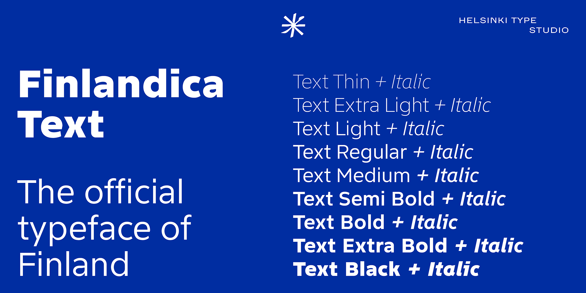

Finlandica is the official typeface of Finland, commissioned by the Prime Minister‘s Office, and free to use by everyone in the spirit of Jokaisenoikeus.
Finlandica Text has generous proportions and open aperture for optimal legibility, reflecting a Finnish sense of trust and calm functionality. Subtle ink traps and carefully engineered details ensure reliability across sizes and media without losing its character.
The companion typeface Finlandica Headline is designed to complement the quiet clarity of Text, with unique character. Finlandica supports a wide range of Latin and Cyrillic scripts.
To contribute, see github.com/HelsinkiTypeStudio/FinlandicaText.
